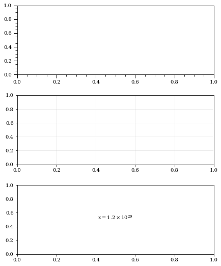
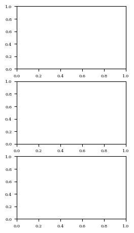
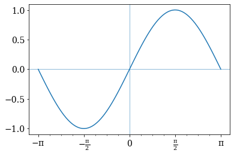
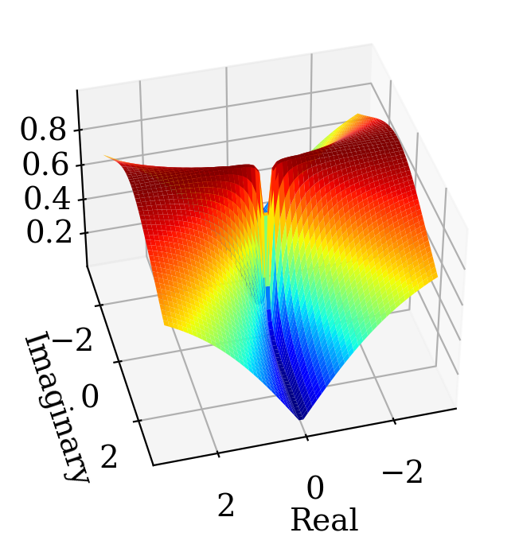
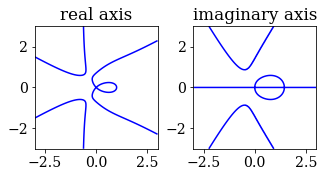
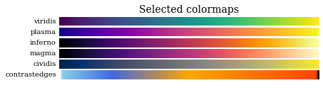

Matplotlib Tools#
Examples#
Subplots#
font_setup()andmatplotlib.pylab.subplots_adjustticks_visual()to change style of ticks and ticks labels, andgrid_visual()for gird.ltexp()for formatting numbers from \(1.23e29\) into \(1.2 \times 10^{29}\).
import matplotlib.pyplot as plt
from aklab import mpls as akmp
akmp.font_setup(size=14)
fig, axs = plt.subplots(3, 1)
fig.set_size_inches(akmp.set_size(500, ratio=1))
plt.subplots_adjust(top=0.99, bottom=0.01, hspace=0.3, wspace=0.1)
akmp.ticks_visual(axs[0])
akmp.grid_visual(axs[1])
txt = f"$x={akmp.ltexp(1.23e29)}$"
axs[2].text(0.5, 0.5, txt,transform=axs[2].transAxes, ha="center")
plt.gcf().set_facecolor('w')

figprep()#
akmp.font_setup(size=6)
akmp.figprep(200,subplots=[3,1],dpi=100,ratio=2)
plt.gcf().set_facecolor('w')

Custom ticks locator#
multiple_formatter() and Multiple.
import numpy as np
akmp.font_setup(size=14)
fig, ax = plt.subplots()
x = np.linspace(-1*np.pi,np.pi,100)
plt.plot(x,np.sin(x))
plt.axvline(0,lw=0.5)
plt.axhline(0,lw=0.5)
tau = np.pi
den = 2
tex = r'\pi'
major = akmp.Multiple(den, tau,tex)
minor = akmp.Multiple(den*4, tau, tex)
ax.xaxis.set_major_locator(major.locator())
ax.xaxis.set_minor_locator(minor.locator())
ax.xaxis.set_major_formatter(major.formatter())

3D plot using complex mesh#
complex_mesh() generates 2D comlex mesh which can be used as an argument to a function.
If the resulting matrix is converted to real values, it could be plotted using a 3D plot.
import matplotlib as mpl
n = 60
b = 3
X, Yc = akmp.complex_mesh([n,n],[-b,b],[-b,b])
Z = X + Yc
Y = Yc.imag
W = abs(np.cos(np.angle(Z)))
fig, ax = plt.subplots(subplot_kw={"projection": "3d"})
ax.plot_surface(X, Y, W, rstride=1, cstride=1, cmap=mpl.cm.jet)
ax.set_xlabel('Real')
ax.set_ylabel('Imaginary')
#ax.plot_wireframe(X, Y, W, rstride=5, cstride=5,lw=0.4,color='y')
ax.view_init(elev=40., azim=75)
fig.set_dpi(200)

2D plot of a complex funciton#
compf = lambda z: (z**2 + z**3 + z**4)/(z-1)
move = lambda z: (z - 0)*0.7
rotate = lambda z: z*np.exp(1j*np.pi*1/2)
f = lambda z: (np.cos(np.angle(compf(move(rotate(z))))))
fig, ax = plt.subplots()
b = 3
n=500
X, Yc = akmp.complex_mesh([n,n],[-b,b],[-b,b])
extent = [X.min(),X.max(),Yc.imag.min(),Yc.imag.max()]
Z = X + Yc
W = f(Z)
colormaps = ['nipy_spectral', 'gist_ncar', 'jet', akmp.colmaps["contrastedges"]]
plt.imshow(W,extent=extent,cmap=akmp.colmaps["contrastedges"],origin='lower')
<matplotlib.image.AxesImage at 0x1da0d859c10>
Contourplots are also helpful.
plt.subplot(2,2,1)
f = lambda z: abs(np.angle(compf(z)))
W = f(Z)
ls = [-np.pi/2,np.pi/2]
cs = ['b']
c1 = plt.contour(W,ls,colors=cs,extent=extent)
plt.gca().set_title('real axis')
plt.subplot(2,2,2)
f = lambda z: np.angle(compf(z))
W = f(Z)
ls = [0]
cs = ['b', 'r' ]
c1 = plt.contour(W,ls,colors=cs,extent=extent)
plt.gca().set_title('imaginary axis')
axs= plt.gcf().axes
[ax.set_aspect('equal') for ax in axs]
plt.subplots_adjust(top=0.99, bottom=0.01, hspace=0.3, wspace=-0.1)

Plot colormap#
colmaps
akmp.plot_color_gradients(
"Selected", ["viridis", "plasma", "inferno", "magma", "cividis", akmp.colmaps["contrastedges"]]
)

Or simply
akmp.colmaps["contrastedges"]
contrastedges

under
bad
over